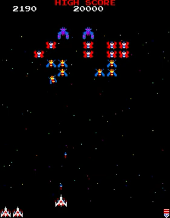

Current Product Target
The current target is a consciously scoped 1.0: four playable stages, a readable challenge stage, one reliable capture/rescue loop, clean high-score/results flow, and public hosting that is trustworthy enough to share.
A readable, current map of the project: what we are building, how the code and tooling fit together, and what still matters before the four-stage 1.0 release.
The high-level state of the game and release effort right now.
The current target is a consciously scoped 1.0: four playable stages, a readable challenge stage, one reliable capture/rescue loop, clean high-score/results flow, and public hosting that is trustworthy enough to share.
Stage 1 and Stage 2 are in good shape, challenge-stage structure is manual-backed and measurably improved, rescue-to-dual flow is now testable end-to-end, and the project has release identity, synced public metadata, and a live release dashboard.
Stage 4 fairness is still the hardest knot before 1.0. The problem is narrower than before, but it still needs polish around escort pressure, collision fairness, and how the stage finishes under real play.
Reference material, harness evidence, and real play all matter. The current rule is to prefer original/manual-backed evidence when a fidelity question exists, then use harness runs and player captures to tune what the game feels like in practice.
What 1.0 means and how far we are from it.
Compact release-triage view for the scoped four-stage 1.0 launch. Owner/status are intentionally short so the whole list stays visible.
| Bucket | Issue | Owner | Status | Evidence | Next | Phase |
|---|---|---|---|---|---|---|
| Must | #18 | Codex | Open | Stage 4 still collapses in harness/manual | Tune Stage 4 finish fairness | Phase 1 |
| Must | #61 | Shared | Watching | Hosted Stage 3->4 can still stall intermittently | Keep logging, capture next bad run | Phase 1 |
| Must | #32 | Codex | Tuning | Stage 2 improved, still live-checking spacing | Keep manual + persona checks | Phase 1 |
| Must | #9 | Codex | Open | Challenge stage still not close enough to original | Tighten challenge behavior | Phase 1 |
| Must | #40 | Codex | Beta review | Capture/rescue now has clearer banners, needs live confirmation | Verify updated beta capture feedback | Phase 3 |
| Must | #74 | Codex | Beta review | Bonus group spacing tightened, needs live feel check | Confirm tighter bonus grouping | Phase 2 |
| Must | #47 | Codex | Beta review | Special squadron layout tightened, needs manual validation | Confirm squadron readability in beta | Phase 2 |
| Must | #38 | Codex | Beta review | Ship-loss feedback strengthened, needs live feel check | Verify explosion, pause, and recovery feel | Phase 2 |
| Must | #45 | Codex | Beta review | Boss damaged text removed in latest feedback pass | Confirm boss first-hit feedback in beta | Phase 2 |
| Must | #76 | Shared | Open | Prod and non-prod share score/data path | Choose env split and route writes | Phase 4 |
| Should | #58 | Codex | Open | Capture rules improved, not fully original | Finish rescue fidelity pass | Phase 3 |
| Should | #73 | Codex | Beta review | Shoot-to-save capture window now works in harness | Verify tractor-beam escape feel | Phase 3 |
| Should | #4 | Shared | Watch | Stage 1 feels fine manually, mixed harness | Revisit only if evidence worsens | Phase 1 |
| Should | #62 | Shared | Watch | Self-play can still fail early in Stage 1 | Keep persona baseline | Phase 1 |
| Should | #31 | Codex | Open | Minor public timestamp polish remains | Clean release date display | Phase 3 |
| Slip | #63 | Codex | Queued | Wait-mode score cycling is polish | Do in attract pass | Phase 3 |
| Slip | #49 / #60 | Codex | Queued | Score panel still wants stronger cues | Polish score view interaction | Phase 3 |
| Slip | #48 | Codex | Partial | Frame exists, art fidelity can wait | Add cabinet-style art later | Phase 2 |
| Slip | #65 | Codex | Queued | Aurora/wintry theming is later polish | Apply after gameplay stabilizes | Phase 2 |
| Slip | #71 | Codex | Queued | Mute button is useful but non-blocking | Add audio toggle in UI | Phase 3 |
The main files and what they own.
`src/index.template.html` and `src/styles.css` define the page shell, settings UI, overlays, layout, and in-game presentation. The served `index.html` is generated from these sources during build.
`src/js/00-boot.js` owns constants, build metadata, score/high-score state, audio, input handling, logging, and the UI state that surrounds the game loop.
`src/js/10-gameplay.js` owns stage spawning, enemy movement, scoring, dive logic, capture/rescue, carried-fighter interactions, ship loss, and the main simulation loop.
`src/js/20-render.js` owns sprite drawing, overlays, stage banners, HUD rendering, and the visual language that explains what is happening in play.
`src/js/90-harness.js` exposes deterministic setup helpers used by local Chrome harness scenarios so we can reproduce challenge, rescue, boss, and Stage 4 cases without depending only on random live play.
`tools/build/build-index.js` assembles the playable game and generated pages. `tools/build/sync-public-pages.js` exports project status to the separate public-site repo using the agreed public status interface.
`tools/log-viewer/` serves the local artifact review app so repaired session videos, synced event streams, Codex prompts, and issue drafting stay in one place while debugging gameplay. It reads the recursive `harness-artifacts/` tree and expects each reviewable run folder to keep a `summary.json` beside its session log and repaired review video.
What is currently measured automatically and why it matters.
The evidence sources the project treats as authoritative or useful.
The 1981 Namco manual and curated original gameplay footage are the first stop for rule questions, scoring behavior, challenge structure, capture/rescue behavior, and visible arcade moments.
Walkthroughs and written references are used carefully for later-stage breadth, progression feel, and confirming that the game experience expands beyond the first few stages, but they do not override primary sources on rules.
The project already keeps focused notes for the first challenge stage, Stage 4 fairness, manual observations, and capture/debug cases so we stop rediscovering the same lessons from scratch.
How changes are expected to move from idea to confidence.
The best entry points for different kinds of work.
Local artifact review app. Start it with `npm run log-viewer` to inspect repaired videos, synced events, and draft issues. Runs must live under `harness-artifacts/` with a `summary.json` and neighboring session/video files.
Quick start, local run, harness commands, and repo-level overview.
Current working plan, known problems, and active priorities.
Release milestones and what belongs to 1.0 versus later.
Short system layout and how build, deploy, harness, and reference flows fit together.
Where specific gameplay systems live in code.
How fidelity questions are grounded in durable source material and issues.
Collaborator onboarding and workflow expectations.
Versioning and release recommendation rules.
Visual timeline of completed, in-progress, and upcoming release steps.
What updates automatically and what should be intentionally maintained.
The most likely next moves based on current project state.
Quick-start, run/build commands, harness commands, and the repo-level overview are pulled directly from the maintained README.
Generated from README.md during build.
Classic fixed-screen browser shooter with keyboard controls, capture-and-rescue mechanics, multi-stage progression, and arcade-style tuning.
Current shipping target:
123 challenging stage4Expansion beyond Stage 4 is currently treated as post-1.0 work unless it directly supports polishing this slice.
Release dashboard:
https://sgwoods.github.io/Aurora-Galactica/release-dashboard.html/Users/stevenwoods/Documents/Codex-Test1/release-dashboard.jsonProject guide:
https://sgwoods.github.io/Aurora-Galactica/project-guide.html/Users/stevenwoods/Documents/Codex-Test1/project-guide.json/Users/stevenwoods/Documents/Codex-Test1/README.md/Users/stevenwoods/Documents/Codex-Test1/PLAN.md/Users/stevenwoods/Documents/Codex-Test1/PRODUCT_ROADMAP.md/Users/stevenwoods/Documents/Codex-Test1/ARCHITECTURE.md/Users/stevenwoods/Documents/Codex-Test1/SOURCE_MAP.md/Users/stevenwoods/Documents/Codex-Test1/REFERENCE_BASELINE.md/Users/stevenwoods/Documents/Codex-Test1/CONTRIBUTING.md/Users/stevenwoods/Documents/Codex-Test1/RELEASE_POLICY.mdRepository roles:
https://github.com/sgwoods/Codex-Test1https://github.com/sgwoods/Aurora-GalacticaAfter GitHub Pages deploys, play at:
https://sgwoods.github.io/Aurora-Galactica/https://sgwoods.github.io/Aurora-Galactica/beta/The root Aurora build is the official public production lane, even while the product is still prerelease in SemVer terms. The /beta/ lane is a manually promoted public checkpoint used for less-frequent milestone playtesting. Day-to-day engineering work continues in Codex-Test1 as the pre-production development line.

cd /Users/stevenwoods/Documents/Codex-Test1 python3 -m http.server 8000http://localhost:8000Left/Right or A/D: MoveSpace: Fire (arcade-style shot cap)P: PauseF: FullscreenU: Ultra scale toggleEnter: Start / RestartF1 or ?: Open in-game feedback formExport Log button: Download the current gameplay session as JSONsrc/index.template.htmlsrc/styles.csssrc/js/00-boot.jssrc/js/10-gameplay.jssrc/js/20-render.jssrc/js/90-harness.js/Users/stevenwoods/Documents/Codex-Test1/SOURCE_MAP.md/Users/stevenwoods/Documents/Codex-Test1/CONTRIBUTING.md/Users/stevenwoods/Documents/Codex-Test1/ARCHITECTURE.md/Users/stevenwoods/Documents/Codex-Test1/REFERENCE_BASELINE.mdindex.html npm run build npm run log-viewerThen open:
http://127.0.0.1:4311/The viewer loads repaired run videos, keeps the event stream aligned beside playback, supports paused zoom/pan and region clipping, and can draft Codex context or GitHub issues from the selected moment. It expects run artifacts to live under:
/Users/stevenwoods/Documents/Codex-Test1/harness-artifacts/With one summary.json per run folder and neighboring files such as:
neo-galaga-session-*.jsonneo-galaga-video-*.review.webmThe viewer discovers runs recursively, so batch folders may contain nested run folders as long as each run keeps that local structure.
beta lane with: npm run promote:betaThis creates or refreshes:
/Users/stevenwoods/Documents/Codex-Test1/beta/Commit the promoted beta/ artifacts in /Users/stevenwoods/Documents/Codex-Test1 when you want the public beta snapshot to move, then publish that committed snapshot into https://github.com/sgwoods/Aurora-Galactica so the hosted https://sgwoods.github.io/Aurora-Galactica/beta/ lane updates.
npm run sync:publicThis updates the canonical Aurora public/status files:
/Users/stevenwoods/GitPages/public/aurora-galactica.html/Users/stevenwoods/GitPages/public/data/projects/aurora-galactica.jsonAnd it keeps the legacy compatibility aliases current:
/Users/stevenwoods/GitPages/public/codex-test1.html/Users/stevenwoods/GitPages/public/data/projects/codex-test1.jsonIt does not update /Users/stevenwoods/GitPages/public/index.html directly.
npm run verify:publictools/build/build-index.jstools/build/sync-public-pages.jstools/build/verify-public-sync.jsbuild-info.jsonrelease-notes.json/Users/stevenwoods/Documents/Codex-Test1/RELEASE_POLICY.md/Users/stevenwoods/Documents/Codex-Test1/PRODUCT_ROADMAP.md/Users/stevenwoods/Documents/Codex-Test1/project-guide.json/Users/stevenwoods/Documents/Codex-Test1/project-guide.htmlnpm run build from the guide config and the maintained docs above./Users/stevenwoods/Documents/Codex-Test1/release-history/.github/workflows/pages.yml.github/workflows/sync-public-pages.yml/Users/stevenwoods/Documents/Codex-Test1/reference-artifacts//Users/stevenwoods/Documents/Codex-Test1/reference-artifacts/analyses/first-challenge-stage/README.mdpackage.json/Users/stevenwoods/Documents/Codex-Test1/release-notes.json/Users/stevenwoods/Documents/Codex-Test1/release-history/build-info.json and release-notes.jsonPUBLIC_REPO_SYNC_TOKEN secret when availablecontents:write access to sgwoods/public0.5.0+build.9.sha.457df280.5.0-beta.1+build.9.sha.457df28.beta/Users/stevenwoods/Documents/Codex-Test1/RELEASE_POLICY.mdExport Log button.webm and .json artifacts into harness-artifacts//Applications/Google Chrome.app npm run harness -- --session /absolute/path/to/neo-galaga-session.json npm run harness -- --scenario stage3-challenge
npm run harness -- --scenario stage3-challenge-persona --persona expert
npm run harness -- --scenario stage3-transition
npm run harness -- --scenario stage3-perfect-transition
npm run harness -- --scenario stage4-five-ships
npm run harness -- --scenario stage4-survival
npm run harness -- --scenario stage1-descent
npm run harness -- --scenario rescue-dual
npm run harness -- --scenario capture-rescue-dual
npm run harness -- --scenario carried-boss-diving-release
npm run harness -- --scenario carried-boss-formation-hostile
npm run harness -- --scenario natural-capture-cycle
npm run harness -- --scenario stage4-capture-pressure
npm run harness -- --scenario boss-first-hit
npm run harness -- --scenario second-capture-current
npm run harness -- --scenario stage12-variety
npm run harness -- --scenario stage4-squadron-bonus
npm run harness -- --scenario carried-fighter-standby
npm run harness -- --scenario carried-fighter-attacking npm run harness:batch -- --profile personas
npm run harness:batch -- --profile distribution
npm run harness:batch -- --profile quick
npm run harness:batch -- --profile fidelity
npm run harness:batch -- --profile default
npm run harness:batch -- --profile deep/Users/stevenwoods/Documents/Codex-Test1/harness-artifacts/summary.jsonneo-galaga-session-*.jsonneo-galaga-video-*.review.webm.webm or .mkv can still be discovered, but the repaired .review.webm is the preferred review artifact. npm run harness:check:video-artifact npm run harness:repair:videossummary.json beside the generated artifacts, including:noviceadvancedexpertprofessionalstage4-capture-pressurestage4-five-ships or stage4-survival npm run harness -- --scenario stage1-opening --persona novice
npm run harness -- --scenario stage2-opening --persona advanced
npm run harness -- --scenario stage4-survival --persona expert npm run harness:batch -- --profile distribution
npm run harness:batch -- --profile distribution --repeats 4noviceadvancedexpertprofessional.webm contains audiobatch-report.json with aggregate challenge hits, ship losses, total duration, and audio failurestuning-report.json with prioritized findings to guide the next gameplay pass.review.webm artifacts and have their neighboring summary.json updated with artifact-quality metadata: npm run harness:repair:videosquick: about 1.5-2 minutesdefault: about 3-4 minutesdeep: about 5-7 minutes npm run harness:analyze -- --run /absolute/path/to/harness-artifacts/run-folder npm run harness:tune -- --batch /absolute/path/to/harness-artifacts/batch-folderharness-artifacts/ and analyze it in one step: npm run harness:import-latest npm run harness:check-latest npm run harness:import-latest -- --session-id ngt-1773602145011-2
npm run harness:import-latest -- --source /absolute/path/to/folderharness:check-latest keeps a small local state file in harness-artifacts/ so scheduled scans can safely skip runs that were already importedThe game includes a floating Feedback button (top-right).
Feature Request and Bug Report submissions post to FormSubmit, which forwards them to default-dimiglyd88@inbox.modem.devmailto: draftOne-time setup:
Current state, known problems, active workstreams, and release-critical priorities come directly from the working plan.
Generated from PLAN.md during build.
index.htmlpackage.json for the pre-production engineering linebuild-info.jsonhttps://sgwoods.github.io/Aurora-Galactica/default-dimiglyd88@inbox.modem.devmailto: draftpublic repo contract:data/projects/aurora-galactica.jsondata/projects/codex-test1.json/Users/stevenwoods/Documents/Codex-Test1/reference-artifacts/ so rules and visual comparisons are not stranded in Downloads1.0 slicevisible arcade event before the four-stage release is considered complete
quick batch: /Users/stevenwoods/Documents/Codex-Test1/harness-artifacts/batch-quick-2026-03-18T20-22-44-404Zfidelity batch: /Users/stevenwoods/Documents/Codex-Test1/harness-artifacts/batch-fidelity-2026-03-18T20-26-14-680Z0 audio failures in the latest quick batch)26/40 hits (65% hit rate in the latest quick batch)4 five-ship scenario still survives the full scenario window, but the average progression is still shallow and losses skew toward collisions4 survival scenario still reaches only Stage 4, confirming later-stage progression remains limited even when survivability improves1 descent baseline is about 1.20s28px1.0 refresh on 2026-03-21 shows:23/40/Users/stevenwoods/Documents/Codex-Test1/RELEASE_POLICY.md for bump guidance/Users/stevenwoods/Documents/Codex-Test1/PRODUCT_ROADMAP.md to decide when a minor-version milestone has actually been reached/Users/stevenwoods/Documents/Codex-Test1/reference-artifacts/ as the durable home for manuals, curated clips, and analysis notes4 onward.webm + .json artifacts as the default tuning inputSubmit Run flow that packages a gameplay video and matching JSON log together#3 Synthetic user agent for headless gameplay with session replay#4 Tune Stage 1 fidelity against original Galaga reference footage#5 Add replay / watch mode for recorded sessions#6 Add gameplay session logging and export#7 Verify FormSubmit activation against Modem inbox#8 Design Submit Run flow using GitHub issues plus Google Drive artifact storage#20 Model manual-accurate captured-fighter destruction scoring#21 Add special three-ship attack squadron bonuses from the manual#22 Implement manual-accurate challenge-stage bonus scoring#23 Add Galaga-style results screen before initials entry#81 Add commentary-ready gameplay telemetry for narrated replaysThis is now the operating plan for the project.
The project is now targeting a smaller 1.0 sub-goal first:
1 through Stage 4 experienceExpansion beyond Stage 4, new theme systems, and broader content breadth are still valuable, but they are now explicitly post-1.0 work unless they are needed to support this smaller shipped slice.
This is the maintained release view for the scoped four-stage 1.0 launch. Use it as the default triage order until launch unless a new regression clearly overrides it.
Current beta-review cluster:
#40 capture / rescue feedback#73 shoot during beam-up#77 capture escape drop-back recovery#80 wait-mode carried fighter dock direction#88 captured fighter disappears at top#74 bonus spacing#47 special squadron spacing#45 boss damaged-text linger#38 ship-loss feedbackCurrent coding priority once those beta checks are confirmed:
#74 / #47 special squadron spacing#18 Stage 4 fairness#32 Stage 2 fairness#76 production vs non-production data separation design#9 remaining challenge-stage fidelity| Bucket | Issue | Owner | Status | Evidence | Next Action | Plan Stage |
|---|---|---|---|---|---|---|
| Must Fix | #80 | Codex | Beta review + automation | Carry-state automation now proves drag-up stays below and docked/wait-mode carried states render above, but the exact swap timing still needs live eyes. | Verify the fighter flips from below to above only at the correct top-dock moment in beta. | Phase 3 |
| Must Fix | #18 | Codex | Automated guard + tuning | New stage-pressure check now guards the Stage 4 baseline, and the latest expert run still shows modest fire (0.548 bullets/attack overall) with collision-dominated Stage 4/5 deaths. | Use the stage-pressure check to tune escort/convergence pressure before touching bullet density broadly. | Phase 1 |
| Must Fix | #61 | Shared | Watching | Hosted Stage 3 -> 4 still has an intermittent bad-transition edge case. | Keep transition telemetry live and capture the next failing run. | Phase 1 |
| Must Fix | #32 | Codex | Automated guard + tuning | New stage-pressure check now guards the Stage 2 baseline; full runs still show active attacks with collision-heavy deaths and no sign that bullet spam is the primary issue. | Use the stage-pressure check to tune Stage 2 dive geometry and lane convergence, then reassess bullet timing only if pressure still feels off. | Phase 1 |
| Must Fix | #9 | Codex | Open | Stage 3 challenge still is not close enough to original Galaga. | Tighten challenge behavior against reference. | Phase 1 |
| Must Fix | #78 | Codex | Automated check + manual confirm | Automated regression now proves challenge collisions kill the player while challenge fire stays off. | Keep the check green and confirm the live post-hit flow still reads correctly in beta. | Phase 1 |
| Must Fix | #40 | Codex | Partial automation + beta review | Automated checks now lock down the key capture/rescue banner wording and sequencing, but readability in motion still needs live confirmation. | Verify the updated beta capture feedback in manual play. | Phase 3 |
| Must Fix | #77 | Codex | Automated check + low-risk manual confirm | Automated recovery check now proves beam-escape recovery returns the ship to the bottom row and allows post-escape firing. | Confirm the drop-back animation/control return still looks clean in beta. | Phase 3 |
| Must Fix | #88 | Codex | Low-risk beta confirm | Latest manual pass says the rest of the capture/carry cluster looks okay, and carry-visual automation now guards against the fighter disappearing at the top carried state. | Keep one more live confirmation while we close the remaining capture items. | Phase 3 |
| Must Fix | #74 | Codex | Open | Latest manual beta pass still says the three-ship bonus/special squadron is too spread out. | Tighten the three-ship attack geometry again and keep the squadron spacing check green. | Phase 2 |
| Must Fix | #47 | Codex | Open | Latest manual beta pass still says the special squadron reads too loose visually. | Tighten lateral/vertical squadron coherence and recheck it in beta. | Phase 2 |
| Must Fix | #45 | Codex | Automated check + manual confirm | Automated first-hit visual regression now proves the boss flash appears and settles without a lingering oversized artifact. | Confirm boss first-hit feedback still looks clean in beta. | Phase 2 |
| Must Fix | #38 | Codex | Beta review | Ship-loss feedback was strengthened and now needs live feel confirmation. | Verify explosion, pause, and recovery feel in beta play. | Phase 2 |
| Must Fix | #76 | Shared | Open | Production and non-production still share the same live score/data path. | Choose environment split and route non-production writes away from production by default. | Phase 4 |
| Must Fix | #85 | Shared | Open | Final release-readiness pass still needs security review, code/docs consistency, and a short players guide. | Schedule the final release-readiness cycle once the blocker cluster is down to a short list. | Phase 4 |
| Should Fix | #58 | Codex | Open | Capture rules are much improved but still not fully original. | Finish the rescue-fidelity pass. | Phase 3 |
| Should Fix | #73 | Codex | Automated check + beta review | Automated shot-window checks now prove early beam-up shots work and late shots are correctly blocked. | Verify the feel/fairness of the shoot-to-save window in beta. | Phase 3 |
| Should Fix | #79 | Codex | Beta review | Manual beta play says keyboard control is better, but fine single-tap alignment still needs a final confidence check. | Keep the current manual-control baseline and revisit only if new live evidence says the feel is still off. | Phase 1 |
| Should Fix | #4 | Shared | Watch | Stage 1 feels acceptable manually, with mixed harness urgency. | Revisit only if evidence worsens. | Phase 1 |
| Should Fix | #62 | Shared | Watch | Self-play can still fail early in Stage 1. | Keep the persona baseline in view while tuning. | Phase 1 |
| Should Fix | #31 | Codex | Open | Minor public timestamp/date polish remains. | Clean the release date display. | Phase 3 |
| Can Slip | #63 | Codex | Queued | Wait-mode score cycling is useful attract polish. | Do it in the attract-mode pass. | Phase 3 |
| Can Slip | #49 / #60 | Codex | Queued | The score panel still wants stronger cues and clearer invocation. | Polish score-view interaction after core gameplay work. | Phase 3 |
| Can Slip | #48 | Codex | Partial | The frame exists; decorative fidelity can still wait. | Add cabinet-style frame art later. | Phase 2 |
| Can Slip | #65 | Codex | Queued | Aurora / wintry theming is still later polish. | Apply thematic art after gameplay stabilizes. | Phase 2 |
| Can Slip | #71 | Codex | Queued | Mute is useful, but not launch-blocking. | Add an audio toggle in the UI. | Phase 3 |
| Can Slip | #91 | Codex | Queued | The scoreboard/header should align cleanly with the top edge of the playfield for arcade fidelity. | Lock the scoreboard to the gameboard top edge in the UI polish pass. | Phase 2 |
Items currently treated as post-1.0 unless they become necessary for external playtesting or operational stability:
#69 remote gameplay logs and optional video artifacts#70 homepage recent plays / watch links#17 broader reference baseline work#19 later-run collision-chain regression outside the four-stage slice/Users/stevenwoods/Documents/Codex-Test1/reference-artifacts/analyses/first-challenge-stage/README.mdAfter each material step:
4 as the end of the current 1.0 game loop1 opening fidelity2 opening pressure3 challenge-stage fidelity4 survival / fairness4 failures without breaking thestronger Stage 1-3 experience
sweeps that undo Stage 4 progress
1.0 candidate for the four-stage slice1.0 roadmap4 fairness for the four-stage 1.0 slice1.0 finishing polish once Stage 4 is good enough4 survivability and fairness so the four-stage loop feels winnable3 experience withoutdestabilizing hit rate or readability
present in the live four-stage slice, not just harness coverage
identity so the product feels intentionally shippable
four-stage 1.0 slice
breadth as post-1.0 roadmap items
Release milestones and what belongs to 1.0 versus later are pulled from the product roadmap.
Generated from PRODUCT_ROADMAP.md during build.
0.5.x-alphaalphafour-stage arcade slice
Definition:
123 challenging stage4Quality bar:
This is the current product target. Expansion beyond Stage 4 is intentionally secondary until this slice is polished.
Target outcome:
Key issue groups:
#4 Stage 1 fidelity#9 challenge-stage fidelity#18 Stage 4 survivability#32 Stage 2 opening pressure / spacing feel#35 capture-driven life-loss accounting in self-play summaries#38 ship-hit explosion / sound / post-hit pause feel#39 repeated fighter capture behavior within a stage#14 second captured-fighter behavior researchgameplay and shows its bonus clearly during the four-stage slice
#31 release date display refinementSuggested versioning:
0.5.x-alphaExecution model:
means
without re-learning the whole project
Target outcome:
Key issue groups:
#7 FormSubmit / Modem viability#8 structured run submission#5 replay / watch mode#3 synthetic user agent / session replay work#25 daily status automation#31 release display refinements if still openSuggested versioning:
0.6.x-alphaTarget outcome:
Key issue groups:
#19 Stage 2/late-run collision chain regressions#17 stronger baseline against original Galaga#69 remote gameplay logs and optional video artifacts#70 homepage recent plays and linked run viewing#81 commentary-ready gameplay telemetry for narrated replaysincluding exact timing, composition, and scoring triggers
#26 through #30Suggested versioning:
0.7.x-alpha and beyondTarget outcome:
testing is worth the overhead
Suggested versioning:
0.8.0-beta.10.9.x-rcTarget outcome:
Suggested versioning:
1.0.0Target outcome:
Key issue groups:
Suggested versioning:
1.0.x1.1.xThese are the architectural themes we should keep capturing incrementally during the v1 push so they can become the basis of a focused post-v1 platform plan.
gameDef structuresdual-fighter behavior are less entangled with the core update loop
runtime refactors
real and already helping Aurora
and other future variants without pausing product progress now
PATCH bump is enough versus when a MINOR bump is justifiedSystem layout, build flow, deploy flow, and harness boundaries come directly from the architecture notes.
Generated from ARCHITECTURE.md during build.
This document is the short technical map for how the project is organized and how work should flow through it.
/Users/stevenwoods/Documents/Codex-Test1/src/index.template.html/Users/stevenwoods/Documents/Codex-Test1/src/styles.css/Users/stevenwoods/Documents/Codex-Test1/src/js/00-boot.js/Users/stevenwoods/Documents/Codex-Test1/src/js/10-gameplay.js/Users/stevenwoods/Documents/Codex-Test1/src/js/20-render.js/Users/stevenwoods/Documents/Codex-Test1/src/js/90-harness.js/Users/stevenwoods/Documents/Codex-Test1/index.html/Users/stevenwoods/Documents/Codex-Test1/tools/build/build-index.js/Users/stevenwoods/Documents/Codex-Test1/index.html/Users/stevenwoods/Documents/Codex-Test1/build-info.json/Users/stevenwoods/Documents/Codex-Test1/.github/workflows/pages.yml/Users/stevenwoods/Documents/Codex-Test1/tools/build/sync-public-pages.js/Users/stevenwoods/Documents/Codex-Test1/.github/workflows/sync-public-pages.yml/Users/stevenwoods/Documents/Codex-Test1/tools/harness/run-gameplay.js/Users/stevenwoods/Documents/Codex-Test1/tools/harness/analyze-run.js/Users/stevenwoods/Documents/Codex-Test1/tools/harness/run-batch.js/Users/stevenwoods/Documents/Codex-Test1/tools/harness/tuning-report.js/Users/stevenwoods/Documents/Codex-Test1/tools/harness/scenarios//Users/stevenwoods/Documents/Codex-Test1/tools/log-viewer/server.js/Users/stevenwoods/Documents/Codex-Test1/tools/log-viewer/index.html/Users/stevenwoods/Documents/Codex-Test1/tools/log-viewer/app.js/Users/stevenwoods/Documents/Codex-Test1/tools/log-viewer/styles.css/Users/stevenwoods/Documents/Codex-Test1/harness-artifacts/summary.jsonneo-galaga-session-*.jsonneo-galaga-video-*.review.webm when availablesummary.json as the run index and then resolves the neighboring session/video files from the summary metadata..json and .webm can be imported and analyzedharness-artifacts/ folder structure and have a summary.json beside them./Users/stevenwoods/Documents/Codex-Test1/reference-artifacts//Users/stevenwoods/Documents/Codex-Test1/reference-artifacts/manuals/galaga-1981-namco//Users/stevenwoods/Documents/Codex-Test1/reference-artifacts/walkthroughs/trueachievements-galaga/These should change carefully and usually only with reference evidence:
These are expected to change often:
The project is moving toward two parallel tracks:
That split should let collaborators work with less conflict and clearer ownership.
Gameplay ownership and where to edit specific systems are pulled from the source map.
Generated from SOURCE_MAP.md during build.
This file is the quick orientation guide for the current codebase. It is meant to answer "where does this behavior live?" before someone starts changing gameplay or tuning values.
/Users/stevenwoods/Documents/Codex-Test1/src/index.template.html/Users/stevenwoods/Documents/Codex-Test1/src/styles.css/Users/stevenwoods/Documents/Codex-Test1/src/js/00-boot.js/Users/stevenwoods/Documents/Codex-Test1/src/js/10-gameplay.jsbullet logic, ship loss, and the main update loop
/Users/stevenwoods/Documents/Codex-Test1/src/js/20-render.js/Users/stevenwoods/Documents/Codex-Test1/src/js/90-harness.jswindow.__galagaHarness__/Users/stevenwoods/Documents/Codex-Test1/tools/log-viewer/server.js indexes run folders under harness-artifacts/app.js synchronizes repaired videos, event streams, clips, and issue draftingsummary.json plus neighboring session/video artifacts/Users/stevenwoods/Documents/Codex-Test1/tools/build/build-index.js/Users/stevenwoods/Documents/Codex-Test1/index.html/Users/stevenwoods/Documents/Codex-Test1/build-info.json/Users/stevenwoods/Documents/Codex-Test1/tools/build/sync-public-pages.jssgwoods/public repo from build metadata/Users/stevenwoods/Documents/Codex-Test1/.github/workflows/pages.yml/Users/stevenwoods/Documents/Codex-Test1/.github/workflows/sync-public-pages.ymlsgwoods/public/Users/stevenwoods/Documents/Codex-Test1/src/js/10-gameplay.jsspawnFormation()spawnChallenge()spawnStage()runStage1Script()These functions define the main board composition and stage transitions.
/Users/stevenwoods/Documents/Codex-Test1/src/js/10-gameplay.jsspawnChallenge()updateChallengeEnemy()challengeGroupBonus()Challenge stages are one of the main fidelity-sensitive systems. Manual-backed rules currently modeled:
/Users/stevenwoods/Documents/Codex-Test1/src/js/10-gameplay.jscanCapture()capturePlayer()finishCapture()destroyCarriedFighter()awardKill(...)update(...)Recent manual-backed rule work includes:
/Users/stevenwoods/Documents/Codex-Test1/src/js/10-gameplay.jsassignEscorts(...)activeEscortCount(...)awardKill(...)This is where the Stage 4+ special squadron bonus behavior now lives.
/Users/stevenwoods/Documents/Codex-Test1/src/js/10-gameplay.jsstageTune(...) in /Users/stevenwoods/Documents/Codex-Test1/src/js/00-boot.jsstageBandProfile(...) in /Users/stevenwoods/Documents/Codex-Test1/src/js/00-boot.jsspawnStage() and loseShip()updateEnemy()If Stage 4/5 feels wrong, this is usually where to look first.
/Users/stevenwoods/Documents/Codex-Test1/src/js/00-boot.jsSTAGE_BAND_PROFILESstageBandProfile(...)enemyFamilyForType(...)/Users/stevenwoods/Documents/Codex-Test1/src/js/10-gameplay.jsmakeEnemy(...)familyMotion(...)spawnStage() stage-profile logging/Users/stevenwoods/Documents/Codex-Test1/src/js/20-render.jsenemyPalette(...)FAMILY_PIXELSThis is where stage-banded family progression now lives for issues like later-stage enemy variety and future transform-style fidelity work.
/Users/stevenwoods/Documents/Codex-Test1/tools/harness/run-gameplay.js/Users/stevenwoods/Documents/Codex-Test1/tools/harness/analyze-run.js.json + .webm/Users/stevenwoods/Documents/Codex-Test1/tools/harness/tuning-report.js/Users/stevenwoods/Documents/Codex-Test1/tools/harness/scenarios/descent timing, Stage 4 pressure, and squadron bonuses
/Users/stevenwoods/Documents/Codex-Test1/harness-artifacts/summary.json as a reviewable runPrimary rule references:
/Users/stevenwoods/Documents/Codex-Test1/reference-artifacts/manuals/galaga-1981-namco/README.md/Users/stevenwoods/Documents/Codex-Test1/reference-artifacts/manuals/galaga-1981-namco/Galaga_-_1981_-_Namco.pdfSecondary progression/fidelity notes:
/Users/stevenwoods/Documents/Codex-Test1/reference-artifacts/walkthroughs/trueachievements-galaga/README.mdUse the manual first when a rule question exists. Use walkthrough/reference clips as secondary help for later-stage variety and visual comparison.
Reference priorities, baseline topics, and the evidence model are pulled directly from the fidelity baseline document.
Generated from REFERENCE_BASELINE.md during build.
This document defines how we turn original Galaga behavior into actionable work for this project.
Create a durable, repeatable baseline for:
For each fidelity topic:
digital input
stepping
stage1-descent harness scenario/Users/stevenwoods/Documents/Codex-Test1/reference-artifacts/analyses/first-challenge-stage/README.md/Users/stevenwoods/Documents/Codex-Test1/reference-artifacts/analyses/challenge-stage-reference/README.mdstage3-challengestage6-regularstage7-challengematches our present reading of the reference material for #33
/Users/stevenwoods/Documents/Codex-Test1/reference-artifacts/analyses/release-reference-pack/README.mdrescue-dualcapture-rescue-dualcarried-boss-diving-releasecarried-boss-formation-hostilesecond-capture-currentnatural-capture-cyclestage4-capture-pressureevidence to claim original-accurate timing/composition for the bonus-yielding three-fighter attack clusters seen in regular play
composition, and scoring behavior before expanding that system further
Important near-term exception:
1.0, the game should still visibly demonstrate theclassic boss-with-two-escorts special attack and show the resulting bonus in normal play, even if deeper late-game pattern research stays post-1.0
stage12-variety/Users/stevenwoods/Documents/Codex-Test1/reference-artifacts/analyses/stage4-fairness/README.md/Users/stevenwoods/Documents/Codex-Test1/reference-artifacts/analyses/release-reference-pack/README.mdstage4-five-shipsstage4-survivalsources.
/Users/stevenwoods/Documents/Codex-Test1/reference-artifacts/analyses/external-galaga5/README.mdHigh-value future baseline additions:
Current focused release pack:
/Users/stevenwoods/Documents/Codex-Test1/reference-artifacts/analyses/release-reference-pack/README.mdWhen a gameplay-fidelity issue is opened or worked, it should eventually point back to at least one entry in this document or to a durable source under:
/Users/stevenwoods/Documents/Codex-Test1/reference-artifacts/Collaborator guidance, build expectations, and review defaults are pulled from the contributing guide.
Generated from CONTRIBUTING.md during build.
This project is still in prerelease. We are optimizing for fast iteration, reference-backed fidelity work, and safe collaboration.
/Users/stevenwoods/Documents/Codex-Test1/src//Users/stevenwoods/Documents/Codex-Test1/index.html cd /Users/stevenwoods/Documents/Codex-Test1
npm run build/Users/stevenwoods/Documents/Codex-Test1/README.md/Users/stevenwoods/Documents/Codex-Test1/SOURCE_MAP.md/Users/stevenwoods/Documents/Codex-Test1/ARCHITECTURE.md/Users/stevenwoods/Documents/Codex-Test1/REFERENCE_BASELINE.md/Users/stevenwoods/Documents/Codex-Test1/PLAN.md/Users/stevenwoods/Documents/Codex-Test1/PRODUCT_ROADMAP.mdcodex/ prefix for working branchescodex/challenge-fidelity-passcodex/stage4-collision-tuningcodex/reference-baseline-docs npm run build npm run harness -- --session /absolute/path/to/neo-galaga-session.json npm run harness -- --scenario stage3-challenge npm run harness:batch -- --profile quickIf a change touches gameplay, include at least one of:
If a change is fidelity-driven, tie it back to:
/Users/stevenwoods/Documents/Codex-Test1/reference-artifacts//Users/stevenwoods/Documents/Codex-Test1/RELEASE_POLICY.mdVersioning and release recommendation rules are pulled directly from the release policy document.
Generated from RELEASE_POLICY.md during build.
MAJOR.MINOR.PATCH-prereleaseMAJOR.MINOR.PATCHMAJOR.MINOR.PATCH-beta.<number>surface-version+build.<number>.sha.<shortcommit>.dirtyExamples:
0.5.0-alpha.1+build.115.sha.b0d812c0.5.0+build.9.sha.457df280.5.0-beta.1+build.9.sha.457df28.betaMAJOR1.x for a public-quality release where the scoped product goal isstable and shippable
1-4) rather than full long-formGalaga expansion
MINORPATCHprereleasealpha: active system building, rules changes, frequent balance changesbeta: feature-complete enough for broader testing, still tuning quality and regressionsrc: release candidate, only bug fixes and polish before a stable cutproductionhttps://sgwoods.github.io/Aurora-Galactica/1.0betahttps://sgwoods.github.io/Aurora-Galactica/beta/pre-productionhttps://github.com/sgwoods/Codex-Test1Codex-Test1Aurora-Galacticanpm run buildnpm run promote:beta/beta/ directory in:https://github.com/sgwoods/Codex-Test1https://github.com/sgwoods/Aurora-GalacticaAurora-Galactica so:https://sgwoods.github.io/Aurora-Galactica/beta/serves the promoted checkpoint
The beta lane is intentionally a snapshot of selected root artifacts, not a separate branch or a second build pipeline. Codex-Test1 remains the engineering source of truth; Aurora-Galactica is the public release surface for both production and beta.
This gives every build a unique identity without forcing a SemVer bump for every commit.
PATCH when:MINOR when:alpha to betabeta to rcMAJOR only when:PATCH bump after:MINOR bump after:/Users/stevenwoods/Documents/Codex-Test1/release-history/pre-1.0beta/beta/ lane for these checkpoint builds rather than updating it on every production change1.01 through Stage 4 feel stable as one coherent game loop3 challenge stage is rewarding and readable4 endpoint is fair and beatableconsciously documented
for general external use
1.0, cleanly separate production and non-production score/data pathsby default
1.0:tables, or a no-submit/dev-only mode
surfaces